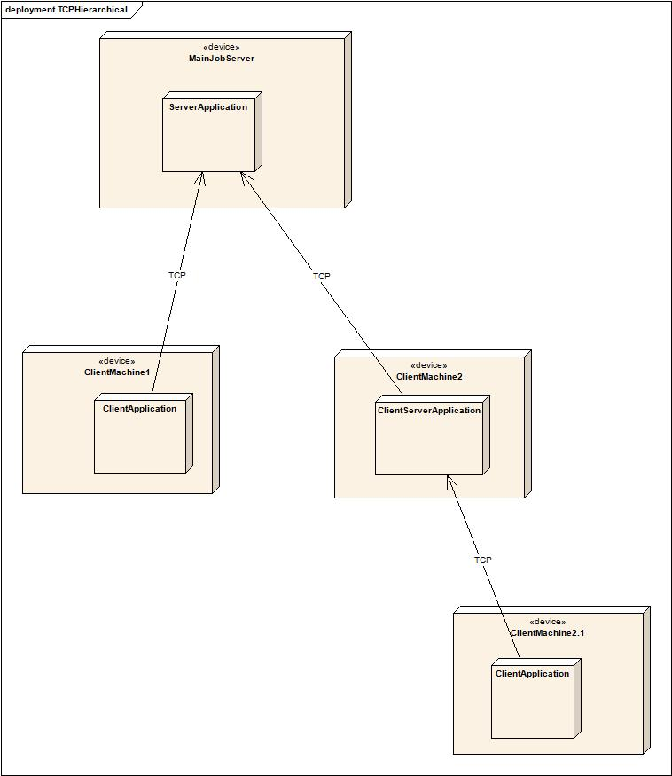

At the time of this writing, a core i7-3930K with 6 cores and 3.2 GHz will cost $560, so say $100 per core. Not a bad deal, so you buy it. Unfortunately, some time later you realize you need more power. Ok, there is no i7 with more cores and an Extreme Edition will be quite expensive for only a little more power so you decide to go for a Xeon. A 12-core E5-2697v2 2.7GHz will go for almost $3000 which means $250 per core, and for this you also have a lesser frequency. And if you need later even more power, well, it will become really expensive. Can Asynchronous help us use more power for cheap, and at best, with little work? It does, as you guess ;-)
Asynchronous provides a special pool, tcp_server_scheduler, which
will behave like any other scheduler but will not execute work itself, waiting
instead for clients to connect and steal some work. The client execute the work
on behalf of the tcp_server_scheduler and sends it back the
results.
For this to work, there is however a condition: jobs must be (boost) serializable to be transferred to the client. So does the returned value.
Let's start with a simplest example:
// notice how the worker pool has a different job type struct Servant : boost::asynchronous::trackable_servant<boost::asynchronous::any_callable,boost::asynchronous::any_serializable> { Servant(boost::asynchronous::any_weak_scheduler<> scheduler) : boost::asynchronous::trackable_servant<boost::asynchronous::any_callable,boost::asynchronous::any_serializable>(scheduler) { // let's build our pool step by step. First we need a worker pool // possibly for us, and we want to share it with the tcp pool for its serialization work boost::asynchronous::any_shared_scheduler_proxy<> workers = boost::asynchronous::make_shared_scheduler_proxy< boost::asynchronous::threadpool_scheduler<boost::asynchronous::lockfree_queue<>>>(3); // we use a tcp pool using the 3 worker threads we just built // our server will listen on "localhost" port 12345 auto pool= boost::asynchronous::make_shared_scheduler_proxy< boost::asynchronous::tcp_server_scheduler< boost::asynchronous::lockfree_queue<boost::asynchronous::any_serializable>>> (workers,"localhost",12345); // and this will be the worker pool for post_callback set_worker(pool); } };
We start by creating a worker pool. The tcp_server_scheduler will
delegate to this pool all its serialization / deserialization work. For maximum
scalability we want this work to happen in more than one thread.
Note that our job type is no more a simple callable, it must be (de)serializable too (boost::asynchronous::any_serializable).
Then we need a tcp_server_scheduler listening on, in this case,
localhost, port 12345. We now have a functioning worker pool and choose to use
it as our worker pool so that we do not execute jobs ourselves (other
configurations will be shown soon). Let's exercise our new pool. We first need a
task to be executed remotely:
struct dummy_tcp_task : public boost::asynchronous::serializable_task { dummy_tcp_task(int d):boost::asynchronous::serializable_task("dummy_tcp_task"),m_data(d){} template <class Archive> void serialize(Archive & ar, const unsigned int /*version*/) { ar & m_data; } int operator()()const { std::cout << "dummy_tcp_task operator(): " << m_data << std::endl; boost::this_thread::sleep(boost::posix_time::milliseconds(2000)); std::cout << "dummy_tcp_task operator() finished" << std::endl; return m_data; } int m_data; };
This is a minimum task, only sleeping. All it needs is a
serialize member to play nice with Boost.Serialization and it
must inherit serializable_task. Giving the task a name is essential
as it will allow the client to deserialize it. Let's post to our TCP worker pool
some of the tasks, wait for a client to pick them and use the results:
// start long tasks in threadpool (first lambda) and callback in our thread
for (int i =0 ;i < 10 ; ++i)
{
std::cout << "call post_callback with i: " << i << std::endl;
post_callback(
dummy_tcp_task(i),
// the lambda calls Servant, just to show that all is safe, Servant is alive if this is called
[this](boost::asynchronous::expected<int> res){
try{
this->on_callback(res.get());
}
catch(std::exception& e)
{
std::cout << "got exception: " << e.what() << std::endl;
this->on_callback(0);
}
}// callback functor.
);
}We post 10 tasks to the pool. For each task we will get, at some later undefined point (provided some clients are around), a result in form of a (ready) expected, possibly an exception if one was thrown by the task.
Notice it is safe to use this in the callback lambda as it will
be only called if the servant still exists.
We still need a client to execute the task, this is pretty straightforward (we will extend it soon):
int main(int argc, char* argv[])
{
std::string server_address = (argc>1) ? argv[1]:"localhost";
std::string server_port = (argc>2) ? argv[2]:"12346";
int threads = (argc>3) ? strtol(argv[3],0,0) : 4;
cout << "Starting connecting to " << server_address << " port " << server_port << " with " << threads << " threads" << endl;
auto scheduler = boost::asynchronous::make_shared_scheduler_proxy<boost::asynchronous::asio_scheduler<>>()
{
std::function<void(std::string const&,boost::asynchronous::tcp::server_reponse,std::function<void(boost::asynchronous::tcp::client_request const&)>)>
executor=
[](std::string const& task_name,boost::asynchronous::tcp::server_reponse resp,
std::function<void(boost::asynchronous::tcp::client_request const&)> when_done)
{
if (task_name=="dummy_tcp_task")
{
dummy_tcp_task t(0);
boost::asynchronous::tcp::deserialize_and_call_task(t,resp,when_done);
}
else
{
std::cout << "unknown task! Sorry, don't know: " << task_name << std::endl;
throw boost::asynchronous::tcp::transport_exception("unknown task");
}
};
auto pool = boost::asynchronous::make_shared_scheduler_proxy<
boost::asynchronous::threadpool_scheduler<
boost::asynchronous::lockfree_queue<boost::asynchronous::any_serializable>>>(threads);
boost::asynchronous::tcp::simple_tcp_client_proxy proxy(scheduler,pool,server_address,server_port,executor,
0/*ms between calls to server*/);
boost::future<boost::future<void> > fu = proxy.run();
boost::future<void> fu_end = fu.get();
fu_end.get();
}
return 0;
}We start by taking as command-line arguments the server address and port and the number of threads the client will use to process stolen work from the server.
We create a single-threaded asio_scheduler for the communication
(in our case, this is sufficient, your case might vary) to the server.
The client then defines an executor function. This function will be called
when work is stolen by the client. As Asynchronous does not know what the work
type is, we will need to "help" by creating an instance of the task using its
name. Calling deserialize_and_call_task will, well, deserialize the
task data into our dummy task, then call it. We also choose to return an
exception is the task is not known to us.
Next, we need a pool of threads to execute the work. Usually, you will want more than one thread as we want to use all our cores.
The simplest client that Asynchronous offers is a
simple_tcp_client_proxy proxy. We say simple, because it is
only a client. Later on, we will see a more powerful tool.
simple_tcp_client_proxy will require the asio pool for
communication, the server address and port, our executor and a parameter telling
it how often it should try to steal work from a server.
We are now done, the client will run until killed.
Let's sum up what we got in these few lines of code:
a pool behaving like any other pool, which can be stolen from
a server which does no work itself, but still scales well as serialization is using whatever threads it is given
a trackable servant working with post_callback, like
always
a multithreaded client, which can be tuned precisely to use a given pool for the communication and another (or the same btw.) for work processing.
Interestingly, we have a very versatile client. It is possible to reuse the
work processing and communication pools, within the same client application, for
a different simple_tcp_client_proxy which would be connecting to another
server.
The server is also quite flexible. It scales well and can handle as many clients as one wishes.
This is only the beginning of our distributed chapter.
Lets's revisit our parallel Fibonacci example. We realize that with higher Fibonacci numbers, our CPU power doesn't suffice any more. We want to distribute it among several machines while our main machine still does some calculation work. To do this, we'll start with our previous example, and rewrite our Fibonacci task to make it distributable.
We remember that we first had to call
boost::asynchronous::top_level_continuation in our
post_callback to make Asynchronous aware of the later return value. The
difference now is that even this one-liner lambda could be serialized and
sent away, so we need to make it a serializable_task:
struct serializable_fib_task : public boost::asynchronous::serializable_task { serializable_fib_task(long n,long cutoff):boost::asynchronous::serializable_task("serializable_fib_task"),n_(n),cutoff_(cutoff){} template <class Archive> void serialize(Archive & ar, const unsigned int /*version*/) { ar & n_; ar & cutoff_; } auto operator()()const -> decltype(boost::asynchronous::top_level_continuation_log<long,boost::asynchronous::any_serializable> (tcp_example::fib_task(long(0),long(0)))) { auto cont = boost::asynchronous::top_level_continuation_job<long,boost::asynchronous::any_serializable> (tcp_example::fib_task(n_,cutoff_)); return cont; } long n_; long cutoff_; };
We need to make our task serializable and give it a name so that the client application can recognize it. We also need a serialize member, as required by Boost.Serialization. And we need an operator() so that the task can be executed. There is in C++11 an ugly decltype, but C++14 will solve this if your compiler supports it. We also need a few changes in our Fibonacci task:
// our recursive fibonacci tasks. Needs to inherit continuation_task<value type returned by this task>
struct fib_task : public boost::asynchronous::continuation_task<long>
, public boost::asynchronous::serializable_task
{
fib_task(long n,long cutoff)
: boost::asynchronous::continuation_task<long>()
, boost::asynchronous::serializable_task("serializable_sub_fib_task")
,n_(n),cutoff_(cutoff)
{
}
template <class Archive>
void save(Archive & ar, const unsigned int /*version*/)const
{
ar & n_;
ar & cutoff_;
}
template <class Archive>
void load(Archive & ar, const unsigned int /*version*/)
{
ar & n_;
ar & cutoff_;
}
BOOST_SERIALIZATION_SPLIT_MEMBER()
void operator()()const
{
// the result of this task, will be either set directly if < cutoff, otherwise when taks is ready
boost::asynchronous::continuation_result<long> task_res = this_task_result();
if (n_<cutoff_)
{
// n < cutoff => execute ourselves
task_res.set_value(serial_fib(n_));
}
else
{
// n>= cutoff, create 2 new tasks and when both are done, set our result (res(task1) + res(task2))
boost::asynchronous::create_callback_continuation_job<boost::asynchronous::any_serializable>(
// called when subtasks are done, set our result
[task_res](std::tuple<boost::future<long>,boost::future<long> > res)
{
long r = std::get<0>(res).get() + std::get<1>(res).get();
task_res.set_value(r);
},
// recursive tasks
fib_task(n_-1,cutoff_),
fib_task(n_-2,cutoff_));
}
}
long n_;
long cutoff_;
};The few changes are highlighted. The task needs to be a serializable task with its own name in the constructor, and it needs serialization members. That's it, we're ready to distribute!
As we previously said, we will reuse our previous TCP example, using
serializable_fib_task as the main posted task. This gives
us this example.
But wait, we promised that our server would itself do some calculation
work, and we use as worker pool only a tcp_server_scheduler.
Right, let's do it now, throwing in a few more goodies. We need a worker
pool, with as many threads as we are willing to offer:
// we need a pool where the tasks execute auto pool = boost::asynchronous::create_shared_scheduler_proxy( new boost::asynchronous::threadpool_scheduler< boost::asynchronous::lockfree_queue<boost::asynchronous::any_serializable> >(threads));
This pool will get the fibonacci top-level task we will post, then, if our clients connect after we start, it will get the first sub-tasks.
To make it more interesting, let's offer our server to also be a job client. This way, we can build a cooperation network: the server offers fibonacci tasks, but also tries to steal some, thus increasing homogenous work distribution. We'll talk more about this in the next chapter.
// a client will steal jobs in this pool auto cscheduler = boost::asynchronous::create_shared_scheduler_proxy(new boost::asynchronous::asio_scheduler<>); // jobs we will support std::function<void(std::string const&,boost::asynchronous::tcp::server_reponse, std::function<void(boost::asynchronous::tcp::client_request const&)>)> executor= [](std::string const& task_name,boost::asynchronous::tcp::server_reponse resp, std::function<void(boost::asynchronous::tcp::client_request const&)> when_done) { if (task_name=="serializable_sub_fib_task") { tcp_example::fib_task fib(0,0); boost::asynchronous::tcp::deserialize_and_call_callback_continuation_task(fib,resp,when_done); } else if (task_name=="serializable_fib_task") { tcp_example::serializable_fib_task fib(0,0); boost::asynchronous::tcp::deserialize_and_call_top_level_callback_continuation_task(fib,resp,when_done); } // else whatever functor we support else { std::cout << "unknown task! Sorry, don't know: " << task_name << std::endl; throw boost::asynchronous::tcp::transport_exception("unknown task"); } }; boost::asynchronous::tcp::simple_tcp_client_proxy client_proxy(cscheduler,pool,server_address,server_port,executor, 10/*ms between calls to server*/);
Notice how we use our worker pool for job serialization / deserialization. Notice also how we check both possible stolen jobs.
We also introduce two new deserialization functions. boost::asynchronous::tcp::deserialize_and_call_task was used for normal tasks, we now have boost::asynchronous::tcp::deserialize_and_call_top_level_callback_continuation_task for our top-level continuation task, and boost::asynchronous::tcp::deserialize_and_call_callback_continuation_task for the continuation-sub-task.
We now need to build our TCP server, which we decide will get only one thread for task serialization. This ought to be enough, Fibonacci tasks have little data (2 long).
// we need a server
// we use a tcp pool using 1 worker
auto server_pool = boost::asynchronous::create_shared_scheduler_proxy(
new boost::asynchronous::threadpool_scheduler<
boost::asynchronous::lockfree_queue<> >(1));
auto tcp_server= boost::asynchronous::create_shared_scheduler_proxy(
new boost::asynchronous::tcp_server_scheduler<
boost::asynchronous::lockfree_queue<boost::asynchronous::any_serializable>,
boost::asynchronous::any_callable,true>
(server_pool,own_server_address,(unsigned int)own_server_port));We have a TCP server pool, as before, even a client to steal work ourselves, but how do we get ourselves this combined pool, which executes some work or gives some away?
Wait a minute, combined pool? Yes, a
composite_threadpool_scheduler will do the trick. As we're
at it, we create a servant to coordinate the work, as we now always
do:
// we need a composite for stealing
auto composite = boost::asynchronous::create_shared_scheduler_proxy
(new boost::asynchronous::composite_threadpool_scheduler<boost::asynchronous::any_serializable>
(pool,tcp_server));
// a single-threaded world, where Servant will live.
auto scheduler = boost::asynchronous::create_shared_scheduler_proxy(
new boost::asynchronous::single_thread_scheduler<
boost::asynchronous::lockfree_queue<> >);
{
ServantProxy proxy(scheduler,pool);
// result of BOOST_ASYNC_FUTURE_MEMBER is a shared_future,
// so we have a shared_future of a shared_future(result of start_async_work)
boost::future<boost::future<long> > fu = proxy.calc_fibonacci(fibo_val,cutoff);
boost::future<long> resfu = fu.get();
long res = resfu.get();
}Notice how we give only the worker "pool" to the servant. This means, the servant will post the top-level task to it, it will immediately be called and create 2 Fibonacci tasks, which will create each one 2 more, etc. until at some point a client connects and steals one, which will create 2 more, etc.
The client will not steal directly from this pool, it will steal from the
tcp_server pool, which, as long as a client request comes,
will steal from the worker pool, as they belong to the same composite. This
will continue until the composite is destroyed, or the work is done. For the
sake of the example, we do not give the composite as the Servant's worker
pool but keep it alive until the end of calculation. Please have a look at
the complete example.
In this example, we start taking care of homogenous work distribution by packing a client and a server in the same application. But we need a bit more: our last client would steal work so fast, every 10ms that it would starve the server or other potential client applications, so we're going to tell it to only steal if the size of its work queues are under a certain amount, which we will empirically determine, according to our hardware, network speed, etc.
int main(int argc, char* argv[])
{
std::string server_address = (argc>1) ? argv[1]:"localhost";
std::string server_port = (argc>2) ? argv[2]:"12346";
int threads = (argc>3) ? strtol(argv[3],0,0) : 4;
// 1..n => check at regular time intervals if the queue is under the given size
int job_getting_policy = (argc>4) ? strtol(argv[4],0,0):0;
cout << "Starting connecting to " << server_address << " port " << server_port << " with " << threads << " threads" << endl;
auto scheduler = boost::asynchronous::create_shared_scheduler_proxy(
new boost::asynchronous::asio_scheduler<>);
{
std::function<void(std::string const&,boost::asynchronous::tcp::server_reponse,std::function<void(boost::asynchronous::tcp::client_request const&)>)>
executor=
[](std::string const& task_name,boost::asynchronous::tcp::server_reponse resp,
std::function<void(boost::asynchronous::tcp::client_request const&)> when_done)
{
if (task_name=="serializable_fib_task")
{
tcp_example::serializable_fib_task fib(0,0);
boost::asynchronous::tcp::deserialize_and_call_top_level_callback_continuation_task(fib,resp,when_done);
}
else if (task_name=="serializable_sub_fib_task")
{
tcp_example::fib_task fib(0,0);
boost::asynchronous::tcp::deserialize_and_call_callback_continuation_task(fib,resp,when_done);
}
else
{
std::cout << "unknown task! Sorry, don't know: " << task_name << std::endl;
throw boost::asynchronous::tcp::transport_exception("unknown task");
}
};
// guarded_deque supports queue size
auto pool = boost::asynchronous::create_shared_scheduler_proxy(
new boost::asynchronous::threadpool_scheduler<
boost::asynchronous::guarded_deque<boost::asynchronous::any_serializable> >(threads));
// more advanced policy
// or simple_tcp_client_proxy<boost::asynchronous::tcp::queue_size_check_policy<>> if your compiler can (clang)
typename boost::asynchronous::tcp::get_correct_simple_tcp_client_proxy<boost::asynchronous::tcp::queue_size_check_policy<>>::type proxy(
scheduler,pool,server_address,server_port,executor,
0/*ms between calls to server*/,
job_getting_policy /* number of jobs we try to keep in queue */);
// run forever
boost::future<boost::future<void> > fu = proxy.run();
boost::future<void> fu_end = fu.get();
fu_end.get();
}
return 0;
}The important new part is highlighted. simple_tcp_client_proxy
gets an extra template argument, queue_size_check_policy, and a
new constructor argument, the number of jobs in the queue, under which the
client will try, every 10ms, to steal a job. Normally, that would be all,
but g++ (up to 4.7 at least) is uncooperative and requires an extra level of
indirection to get the desired client proxy. Otherwise, there is no
change.
Notice that our standard lockfree queue offers no size() so we use a less efficient guarded_deque.
You will find in the complete example a few other tasks which we will explain shortly.
Let's stop a minute to think about what we just did. We built, with little code, a complete framework for distributing tasks homogenously among machines, by reusing standard component offered by the library: threadpools, composite pools, clients, servers. If we really have client connecting or not is secondary, all what can happen is that calculating our Fibonacci number will last a little longer.
We also separate the task (Fibonacci) from the threadpool configuration, from the network configuration, and from the control of the task (Servant), leading us to highly reusable, extendable code.
In the next chapter, we will add a way to further distribute work among not only machines, but whole networks.
We already distribute and parallelize work, so we can scale a great deal, but our current model is one server, many clients, which means a potentially high network load and a lesser scalability as more and more clients connect to a server. What we want is a client/server combo application where the client steals and executes jobs and a server component of the same application which steals jobs from the client on behalf of other clients. What we want is to achieve something like this:

We have our server application, as seen until now, called interestingly ServerApplication on a machine called MainJobServer. This machine executes work and offers at the same time a steal-from capability. We also have a simple client called ClientApplication running on ClientMachine1, which steals jobs and executes them itself without further delegating. We have another client machine called ClientMachine2 on which ClientServerApplication runs. This applications has two parts, a client stealing jobs like ClientApplication and a server part stealing jobs from the client part upon request. For example, another simple ClientApplication running on ClientMachine2.1 connects to it and steals further jobs in case ClientMachine2 is not executing them fast enough, or if ClientMachine2 is only seen as a pass-through to move jobs execution to another network. Sounds scalable. How hard is it to build? Not so hard, because in fact, we already saw all we need to build this, so it's kind of a Lego game.
int main(int argc, char* argv[])
{
std::string server_address = (argc>1) ? argv[1]:"localhost";
std::string server_port = (argc>2) ? argv[2]:"12345";
std::string own_server_address = (argc>3) ? argv[3]:"localhost";
long own_server_port = (argc>4) ? strtol(argv[4],0,0):12346;
int threads = (argc>5) ? strtol(argv[5],0,0) : 4;
cout << "Starting connecting to " << server_address << " port " << server_port
<< " listening on " << own_server_address << " port " << own_server_port << " with " << threads << " threads" << endl;
// to be continuedWe take as arguments the address and port of the server we are going to steal from, then our own address and port. We now need a client with its communication asio scheduler and its threadpool for job execution.
auto scheduler = boost::asynchronous::create_shared_scheduler_proxy(new boost::asynchronous::asio_scheduler<>); { //block start std::function<void(std::string const&,boost::asynchronous::tcp::server_reponse, std::function<void(boost::asynchronous::tcp::client_request const&)>)> executor= [](std::string const& task_name,boost::asynchronous::tcp::server_reponse resp, std::function<void(boost::asynchronous::tcp::client_request const&)> when_done) { if (task_name=="serializable_fib_task") { tcp_example::serializable_fib_task fib(0,0); boost::asynchronous::tcp::deserialize_and_call_top_level_callback_continuation_task(fib,resp,when_done); } else if (task_name=="serializable_sub_fib_task") { tcp_example::fib_task fib(0,0); boost::asynchronous::tcp::deserialize_and_call_callback_continuation_task(fib,resp,when_done); } // else whatever functor we support else { std::cout << "unknown task! Sorry, don't know: " << task_name << std::endl; throw boost::asynchronous::tcp::transport_exception("unknown task"); } }; // create pools // we need a pool where the tasks execute auto pool = boost::asynchronous::create_shared_scheduler_proxy( new boost::asynchronous::threadpool_scheduler< boost::asynchronous::lockfree_queue<boost::asynchronous::any_serializable> >(threads)); boost::asynchronous::tcp::simple_tcp_client_proxy client_proxy(scheduler,pool,server_address,server_port,executor, 10/*ms between calls to server*/); // to be continued
We now need a server to which more clients will connect, and a composite binding it to our worker pool:
// we need a server
// we use a tcp pool using 1 worker
auto server_pool = boost::asynchronous::create_shared_scheduler_proxy(
new boost::asynchronous::threadpool_scheduler<
boost::asynchronous::lockfree_queue<> >(1));
auto tcp_server= boost::asynchronous::create_shared_scheduler_proxy(
new boost::asynchronous::tcp_server_scheduler<
boost::asynchronous::lockfree_queue<boost::asynchronous::any_serializable>,
boost::asynchronous::any_callable,true>
(server_pool,own_server_address,(unsigned int)own_server_port));
// we need a composite for stealing
auto composite = boost::asynchronous::create_shared_scheduler_proxy(new boost::asynchronous::composite_threadpool_scheduler<boost::asynchronous::any_serializable>
(pool,tcp_server));
boost::future<boost::future<void> > fu = client_proxy.run();
boost::future<void> fu_end = fu.get();
fu_end.get();
} //end block
return 0;
} //end mainAnd we're done! The client part will steal jobs and execute them, while the server part, bound to the client pool, will steal on sub-client-demand. Please have a look at the complete code.